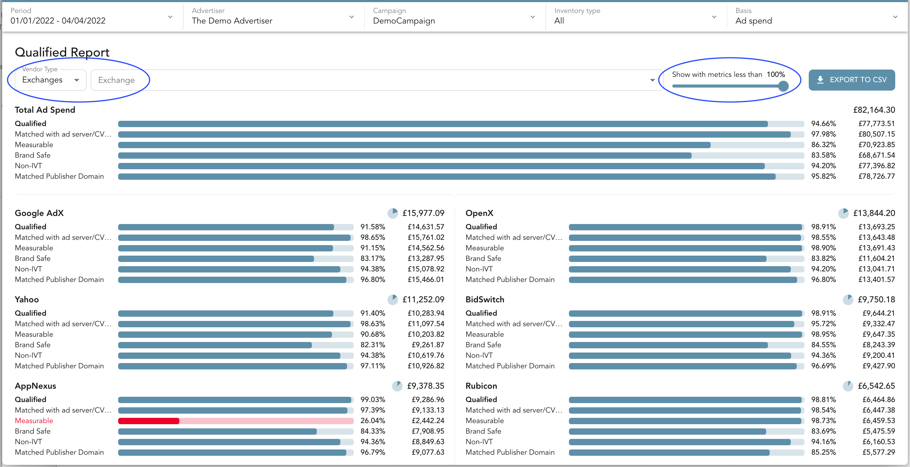

Qualified Report
The Qualified Report is only available on advertiser or agency nodes.
The objective of this screen is to allow you to quickly see why your exchanges or Publishers are not meeting your qualified spend target. The qualified spend metric is typically defined by 5-7 other metrics. This report allows you to see how each of your partners are performing against all 5-7 metrics without having to run a bunch of individual queries.

Filtering Options
It is important to highlight that the data above can be viewed with a few options at the top of the screen. These options are highlighted in the blue ovals above.
Show with metrics less than
If you want to see the exchanges or domains that have qualified metrics at or below a specific number this slider control can be used for this. For example, if you want to see only exchanges that had one or more of their metrics below 60%, you could set this control to 60%. All other exchanges will not be displayed.
Vendor Type
In this filter you have the following options:
- Exchanges: this will list all of the exchanges and their corresponding metrics.
- Publisher/Domains: this will list all of the domains and their corresponding metrics.
Exchange or publisher/domain
This field will allow you to filter the data in this report to a specific exchange or domain.
Bar color codes
The following are the meanings for the different colored bars:
- Green bar: The metric has met the qualified definition.
- Red bar: The metric has NOT met the qualified definition.
- Light gray bar: The required data is not available to determine if the metric has met the qualified definition or not.